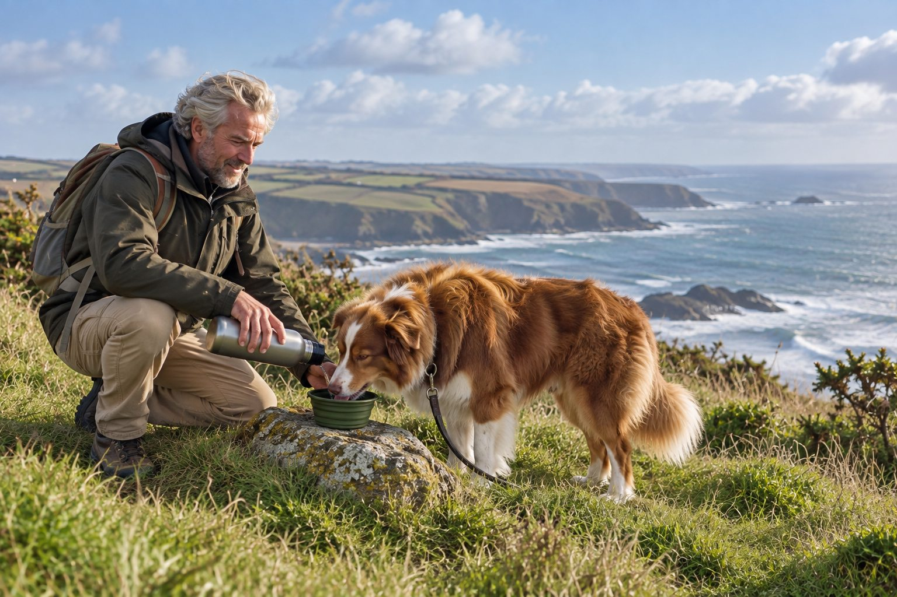

Many adult dogs benefit from daily walks and play, but the right amount depends on the individual dog; ask your veterinarian about limits or a new exercise plan.
Exercise is more than a number of minutes. A slow sniffing walk, a short game, and a training session can all enrich a day in different ways. The best routine leaves your dog comfortably tired, not exhausted or sore.
Start with the dog in front of you
Consider age, body condition, breed traits, weather, and any medical condition. A young active dog may enjoy more movement than a senior with joint pain. Puppies need short, age-appropriate activity rather than forced long runs.
If your dog has been inactive, increase activity gradually. Ask your veterinarian before beginning strenuous exercise or if your dog is overweight or recovering from injury.
Start with the dog you have, not a breed chart. Age, body condition, health, previous activity, heat, and terrain all influence what movement is comfortable. Observe the dog during a normal walk: does it move willingly, breathe comfortably, and recover afterward? A dog that lags, limps, coughs, or seems exhausted needs a review, not a target number of minutes to push through. If activity has been low for a while, increase gradually. Ask the veterinarian for limits when there is a known heart, joint, respiratory, or other medical condition.
Keep a short record of outing length, surface, weather, and how the dog felt later that day and the next morning. Delayed stiffness can show that an activity was too much even if the dog seemed enthusiastic at the time. A sustainable plan adjusts to recovery.
Mix movement with enrichment
Walks provide exercise and a chance to sniff. Play, food puzzles, and training work the mind. Try different safe activities and note which ones your dog enjoys. Off-leash time requires a secure area and reliable recall.
A dog who cannot walk far may still enjoy gentle scent games at home. Enrichment should suit mobility and comfort, not a rigid checklist.
Exercise is more than distance. A slow sniffing walk can provide mental activity, while a few short training games or a food puzzle can enrich a day when intense movement is unsuitable. Mix walking, gentle play, and rest according to the individual dog. Not every dog needs running, and a high-energy dog may also need help learning to settle. Do not use a frantic fetch session as the only measure of a good day. Repetitive high-impact turns may be inappropriate for some dogs.
Offer choice where safe: let the dog pause to sniff, change direction, or take a break. In warm weather, choose cooler times and bring water. Watch for heavy distress, stumbling, or trouble breathing and seek veterinary advice promptly. Enrichment should leave the dog engaged and comfortable, not overwhelmed.

Read the signs
Healthy exercise ends with a dog who recovers well and is ready to rest. Limping, lagging behind, excessive panting, or reluctance the next day can signal too much. Stop and seek veterinary advice when signs are concerning or persistent.
Avoid hot pavement and midday heat. Carry water and take breaks, particularly for short-nosed dogs and those with thick coats.
Puppies and older dogs need particular care. A growing puppy may play in short bursts but should not be forced into an adult endurance plan. An older dog may enjoy several shorter walks more than one long outing, especially with joint discomfort. Ask the veterinarian about individual limits rather than applying a rigid rule based solely on age. A dog returning after illness or surgery needs the specific recovery instructions from its veterinary team. Do not use general exercise advice to override those directions.
Weather and surface change the same walk. Hot pavement, icy paths, steep hills, and deep sand can demand more effort or create hazards. Plan a route with shade or a safe way home. If a dog begins favoring a leg or becomes reluctant to continue, stop and assess. A good routine is one the dog can repeat comfortably.
Balance an activity day
| Activity | What it contributes |
|---|---|
| Comfortable walk with sniffing | Movement plus exploration at the dog’s own pace. |
| Short play or training | Mental engagement without requiring one strenuous outing. |
| Rest and next-day check | Shows whether the dog recovered or needs a lighter plan. |
Adjust activity to age, weather, body condition, and veterinary guidance.
Build a sustainable routine
Several shorter outings can be easier to fit in than one long session. Consistency matters: activity that happens regularly is more useful than an occasional exhausting weekend. Adjust with seasons and your dog's changing health.
Build a weekly plan that allows variation. Some days may include a longer relaxed walk; others may use several short outings and indoor scent games. Keep rest days or lighter days after unusual exertion. Measure the result by the dog's comfort, body condition, sleep, and interest rather than by a wearable's number alone. If a dog seems restless despite plenty of running, consider whether it needs calmer mental work, predictability, or a behavioral assessment instead of still more speed.
Share the plan with anyone who walks the dog. Two people may each assume the other skipped exercise and unintentionally double an intense outing. A simple note of activity and any stiffness helps coordinate care. Reassess when work schedules, seasons, or the dog's health change. Consistency matters, but flexibility prevents overdoing it.
Practical details
Minutes alone do not describe a good day
A slow walk with sniffing can be mentally rich even when it covers little distance. A fast run may tire a dog physically while leaving a need for exploration or calm interaction. Think in terms of movement, play, training, and rest. The mix should fit the dog's age, breed traits, body condition, and health, not a single number copied from a chart.
Start with the routine your dog already handles comfortably. Increase activity gradually and watch recovery afterward. A dog that limps, refuses the next walk, or takes unusually long to settle may have done too much. Your veterinarian can help set limits when there is a heart, joint, breathing, or weight concern.
Adjust activity to the dog's situation
| Situation | Practical response |
|---|---|
| Healthy adult | Combine regular walks with play and mental enrichment, then adjust based on comfort. |
| Puppy | Use short, age-appropriate play and ask a veterinarian before sustained running. |
| Senior or recovering dog | Choose gentle activity within the veterinarian's advice and watch for soreness afterward. |
| Hot or harsh weather | Shorten outings, avoid hot pavement, carry water, and move play indoors when needed. |
Build variety without overdoing it
A typical day might include a morning sniff walk, a short play session, and an evening outing. Another dog may prefer puzzle feeding and several brief walks. Safe off-leash activity requires a secure area and a reliable recall. Do not use high-impact games on slippery floors or ask an unfit dog to join a long weekend hike without preparation.
Puppies need age-appropriate movement and plenty of rest; forced repetitive exercise can be unsuitable for a growing dog. Senior dogs often still enjoy walking, but terrain, pace, and distance may need adjustment. A veterinarian can advise when a new exercise plan is appropriate.
For example, a healthy adult dog may enjoy a morning sniffing walk, a short training session at home, and an evening walk. Another dog with a joint condition may need shorter, flatter routes and more mental enrichment, as agreed with the veterinarian. These are illustrations rather than prescriptions. The best plan starts at the animal's current ability and changes in small steps. After a more active day, check whether the dog rises normally the following morning.
Keep the environment safe indoors too. Slippery floors can make energetic games risky, and small spaces may encourage sharp turns. Choose activities the dog can do without crashing into furniture. Food puzzles should match the dog's size and be supervised when needed. An activity plan is useful only if it supports both physical comfort and enjoyment.
Read the response, not just the clock
Comfortable breathing, willingness to participate, normal gait, and an easy return to rest are useful signs. Excessive panting, lagging, limping, coughing, or distress means stop and assess. Hot pavement and high temperatures add risk, especially for dogs with short noses or thick coats. Carry water and plan shade and breaks.
When outdoor exercise is limited by weather or injury, try gentle scent games or reward-based training within the dog's medical limits. Exercise should support health and enjoyment, not become an endurance test. Review the plan as seasons, age, and fitness change.
Watch for patterns that suggest professional input. A dog that repeatedly limps, coughs on exertion, struggles in mild heat, or takes a long time to recover should be assessed. Do not interpret reluctance as laziness. Conversely, a dog that remains unsettled after strenuous activity may need a better balance of sleep, training, and enrichment. A veterinary team can help distinguish conditioning from a medical limit, and a qualified trainer can support calm routines.
Avoid comparing dogs in the same household. One may need more movement and another more rest, even if they share a breed. Track each dog's response separately. The useful answer to how much exercise a dog needs is the amount and type that keep that dog healthy, comfortable, and able to recover, reviewed as life changes.
A short weekly review is more useful than chasing one daily number. Note which activities the dog enjoyed, whether it settled afterward, and whether stiffness or reluctance appeared later. Adjust one variable at a time: route length, pace, terrain, or type of play. If the dog is returning from inactivity, build up gradually and include lighter days. The veterinarian can help set a safe range for a dog with a medical condition. Do not use another dog's routine as a target just because the two are similar in size.
On a day when weather makes a walk unsafe, replace some outdoor time with indoor scent searches or calm training in a nonslip space. Keep rest available and avoid intense games in cramped rooms. Exercise should support mobility and enjoyment, not create exhaustion for its own sake. A sustainable plan is one the dog can recover from and the household can maintain as seasons and health change.
Build an activity plan around your dog
Start with the dog's current routine rather than an online target for an entire breed. Note how your dog walks, plays, and recovers afterward. A comfortable dog usually shows interest during the activity and settles afterward; limping, lagging, coughing, or unusual exhaustion suggests the plan needs review. Age, body condition, heat, and medical history all affect what is appropriate.
Mix movement with mental activity. A slow sniffing walk, a short training game, and a food puzzle can make a day satisfying without forcing one long strenuous outing. Increase duration gradually, especially after a period of inactivity. In hot weather, choose cooler times and bring water; a dog that struggles to breathe or overheats needs immediate attention. Avoid high-impact games for a dog with a known joint problem unless the veterinarian approves them.
For puppies and senior dogs, ask your veterinarian about limits specific to their stage and health. Keep a simple record of activity and any stiffness later that day or the next morning. Adjust the plan when recovery changes. The useful question is whether your dog stays comfortable and engaged, not whether every day reaches an arbitrary number of minutes.
If weather prevents outdoor exercise, use short indoor scent games or basic cue practice in a safe space. Make rest part of the plan too. A dog that cannot settle may need a different balance of routine, enrichment, and recovery rather than simply more intense exercise.
Watch the day after a new activity as well as the activity itself. Stiffness or reluctance to climb stairs can signal that the increase was too much. Reduce intensity and discuss persistent discomfort with a veterinarian. A sustainable routine should leave room for recovery.
Continue exploring
For a broader routine, read How to Help Your Dog Stay Calm During Car Rides, How to Stop a Dog From Barking at Everything, and A Daily Routine That Enriches an Indoor Cat.
Frequently Asked Questions
Is one walk a day enough for a dog?
It depends on the dog and the rest of its play and enrichment. Watch behavior and comfort.
Can a dog get too much exercise?
Yes. Gradual increases and rest help prevent overexertion.
Do older dogs still need exercise?
Usually yes, within their comfort and veterinary guidance.
Editorial references
These resources informed the general guidance in this article. They do not replace advice tailored to your pet.
This guide offers general information. Your pet’s age, health, and history may call for a different plan. For medical concerns, ask your veterinarian.